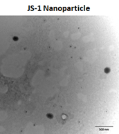
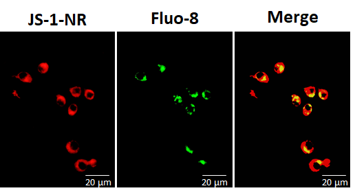
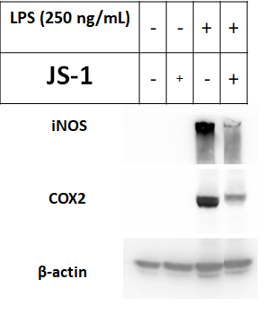

In Vitro
To understand whether our JS-1 design worked as we expected, we conducted two in vitro experiments to examine.
First, We monitored the transporting pathway and the target site of JS-1 via bio-labeling fluorescence (Flu-8/TEM) to make sure it could be stably transported and exert its effect.
Second, we used immunoblotting to analyze the influence of JS-1 on expression of inflammatory protein iNOS and COX2.
Overall, JS-1 can be endocytosed by macrophages and release transported product and can suppress the iNOS and COX2 protein expression remarkably.
I. Validated that JS-1 can be stably transported to targeting cell
Based on transmission electron microscopy (TEM) analysis, the JS-1 nanoparticles exhibited spherical morphology.
 Figure. G1. TEM photographs of nanoparticles as JS-1.
To analyze the interaction of macrophages and nanoparticles, we used JS-1 to encapsulate fluorescent dye nile red and incubated Fluo-8 (a lysosomal marker) to trace the location of nanoparticles in macrophages. As shown in Figure G2, the fluorescent nile red and green fluorescence of Fluo-8 were colocalized in Raw264.7 macrophages, suggested JS-1-nile red was endocytosed by macrophages.
 Figure. G2: JS-1-Nile red was endocytosed by Raw264.7 macrophages and Fluo-8 was used to stain lysosomes.
II. JS-1 can suppress iNOS and COX2 protein expression in Lipopolysaccharide / D-galactosamine (LPS / D-Gal)- induced inflammatory signaling pathways
To determine whether JS-1 block HuR function as it did in silico, LPS-induced inflammation in Raw264.7 cells was used.
Raw264.7 cells were treated with peptide or JS-1 for 1 h, followed by incubation with LPS (250 ng/ml) for 20 hours and the inflammatory molecules were analyzed by western blot.
As shown in Figure G3, iNOS and COX2 are suppressed by JS-1.
 Figure. G3: Raw264.7 macrophages were pretreated with or without JS-1 for 1 h, followed by incubation with LPS (250 Ng/ml) for 20 h. Total cell lysates were subjected to western blot for detecting iNOS and COX2.
Reference:
- Mignon, A.; Rouquet, N.; Fabre, M.; Martin, S.; Pages, J. C.; Dhainaut, J. F.; Kahn, A.; Briand, P.; Joulin, V. Am J Resp Crit Care 1999, 159, (4), 1308-1315.
- Freudenberg, M. A.; Galanos, C. Infect Immun 1988, 56, (5), 1352-1357.
- Mohamed-Elamir F. Hegazy, Ahmed R. Hamed,Tarik A. Mohamed, Abdessamad Debbab,Seikou Nakamura,Hisashi Matsudac and Paul W. Paré. RSC Adv., 2015,5, 44895-44901